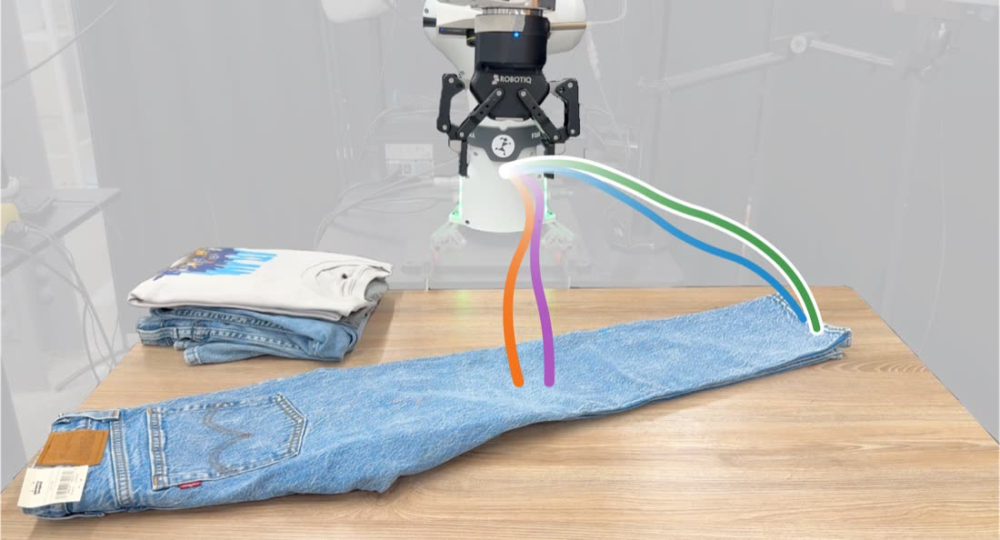
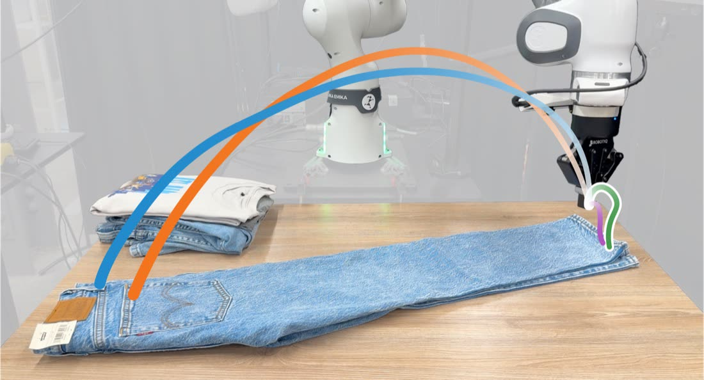
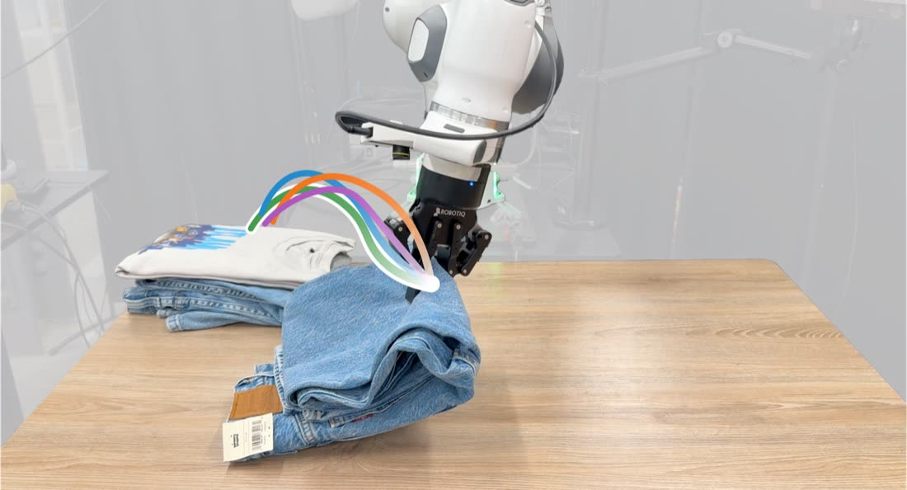
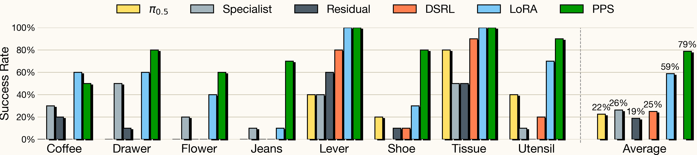
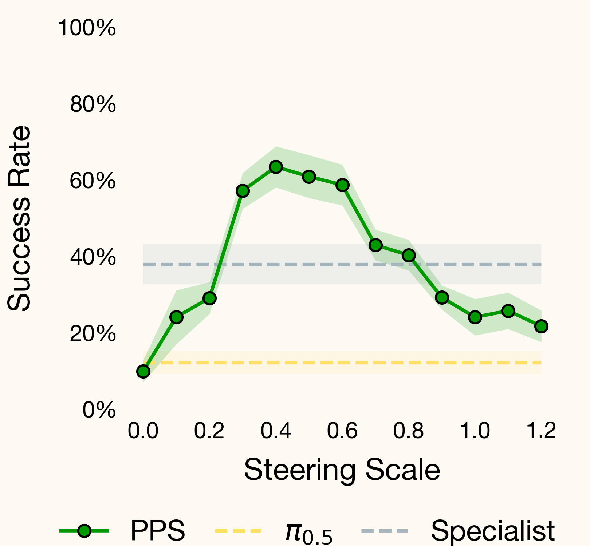
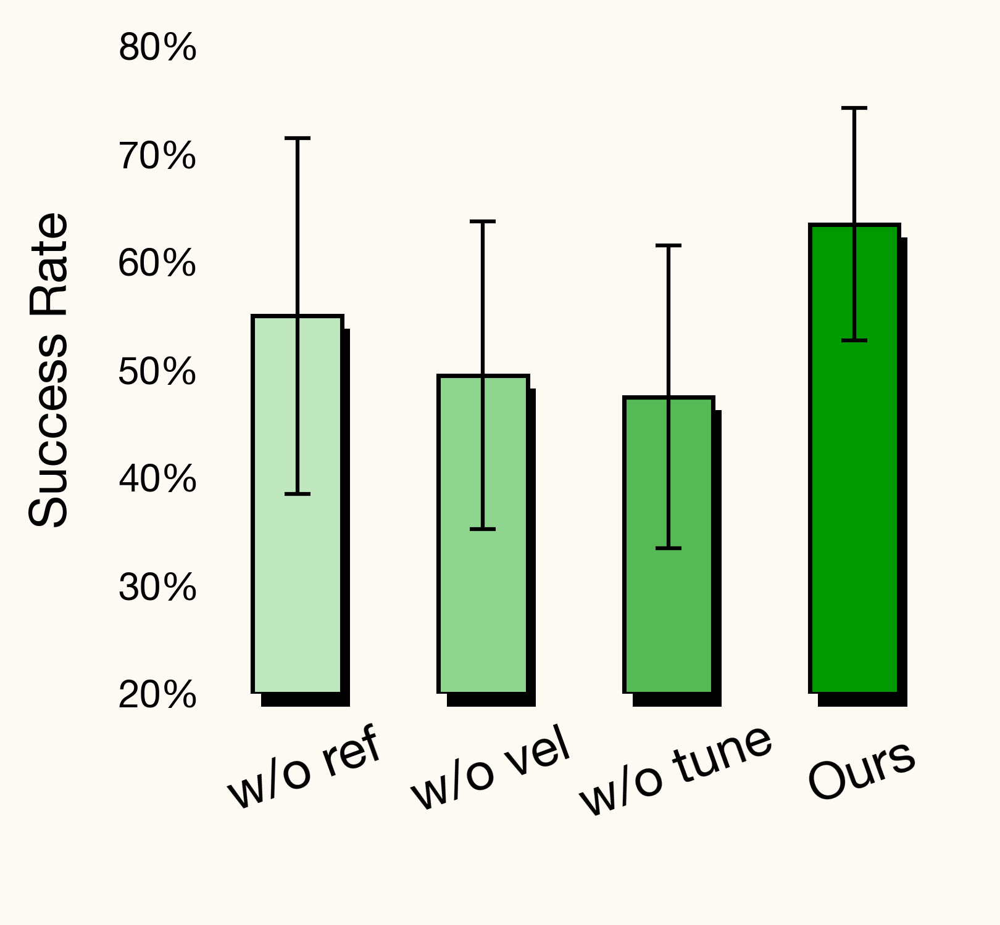
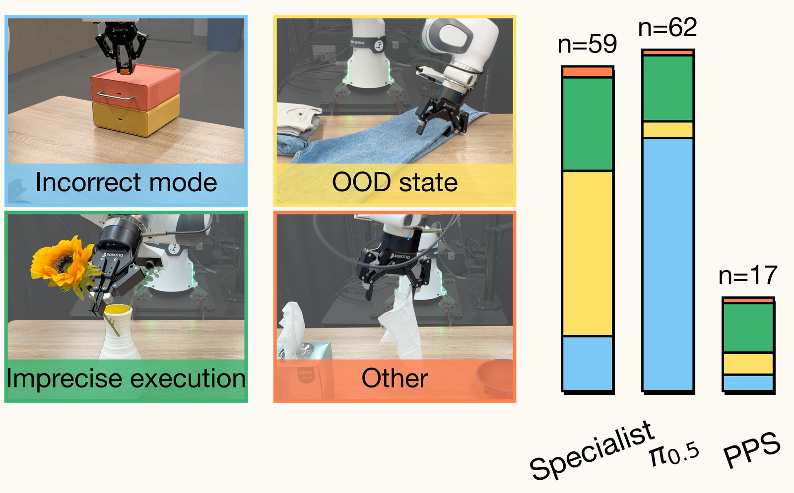

Proxy Policy Steering
Robotics foundation models carry broad manipulation priors from large-scale data, but specializing them to a new task remains the deployment bottleneck. This requires injecting new task-specific behavior from limited demonstrations without eroding their broad capabilities. We introduce Proxy Policy Steering (PPS), a novel adaptation method that addresses this challenge by training two lightweight proxy policies. A reference proxy models the frozen base's behavior on target-task observations, and a task proxy, initialized from the reference, captures how this behavior changes under task supervision. Their difference forms a calibrated velocity-space residual that steers the frozen base sampler at every denoising step. We identify the conditions under which this residual isolates the change induced by task supervision, and validate them empirically. On 8 real-world and 4 simulation manipulation tasks, PPS lifts the state-of-the-art π0.5 base policy by 53% absolute success rate on average, with 0-to-1 gains on tasks the base never solves, while preserving the base's broad capabilities. PPS outperforms LoRA fine-tuning, from-scratch specialists, residual policies, and prior inference-time steering methods.
Our key insight is that effective adaptation should neither steer only within the base's existing distribution nor replace the base with a narrowly trained specialist. Instead, PPS estimates the direction in which task supervision would shift the base's action distribution, leaving its weights and broad priors untouched.





To estimate that direction without access to base gradients, PPS trains two lightweight proxy policies and takes their difference in velocity space:
- Reference proxy πref: distilled on-policy from the base's own denoising trajectories, so it reproduces base behavior on exactly the states the sampler visits at inference.
- Task proxy πtask: initialized from πref and fine-tuned on the task demonstrations. Sharing initialization and architecture with the reference, it differs from it through task supervision alone, and their difference in velocity space isolates the task-induced change.
At inference, PPS integrates the guided velocity field in each flow-matching step:
The coefficient γ sets the steering strength: when the demonstrations call for new actions the residual drives the sampler toward the task proxy, and when the proxies agree it vanishes and the frozen base stays in control, preserving broadly useful priors.
We evaluate PPS on 8 real-world and 4 simulation manipulation tasks, spanning long-horizon goals, articulated and deformable objects, and diverse skills. PPS delivers consistent gains over the base model and outperforms fine-tuned models, from-scratch specialists, and prior steering baselines, with 0-to-1 gains on tasks the base never solves on its own.
+53% absolute success over the π0.5 base, averaged across 8 real-world tasks.

+51% absolute success over the π0.5 base, averaged across 4 simulation tasks, outperforming LoRA, specialist, residual, and DSRL on every task.

Because PPS leaves the base model untouched, the combined policy inherits its broad priors and recovers from failures it never saw in the demonstrations. LoRA fine-tuning, by contrast, overfits to the handful of demonstrations and loses these priors, breaking down under the same perturbations.
Through a series of analyses, we study what makes PPS effective and where it still falls short.

Steering strength. The coefficient γ trades base priors against task steering. Success peaks for γ in (0.4, 0.6), well above both baselines.

Proxy training. On-policy distillation, velocity-level supervision, and reference initialization each ensure the two proxies differ by task supervision alone, and their difference is an informative task signal.

Failure modes. PPS fails far less often than the specialist and base, cutting incorrect-mode errors 69% versus the base and out-of-distribution errors 44% versus the specialist.
Because the proxies are separate networks, they can take inputs the base never receives. PPS routes extra modalities such as point cloud or audio into the frozen, RGB-only base through the task proxy: the point cloud locates a texture-less object, and audio tells the ringing phone from the silent one. This makes PPS a lightweight way to add new sensors without retraining the base.